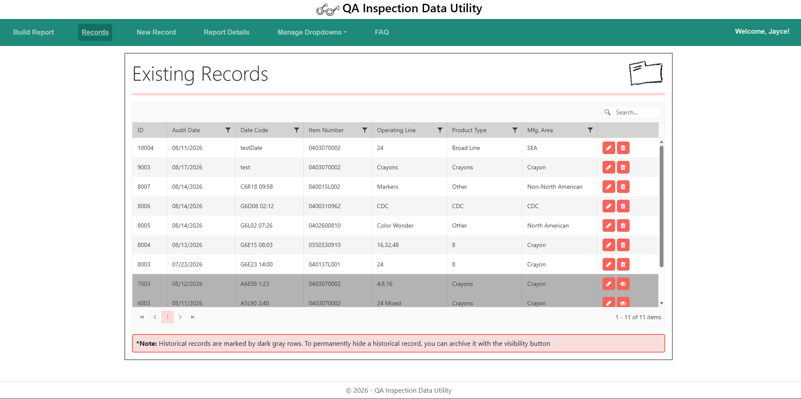
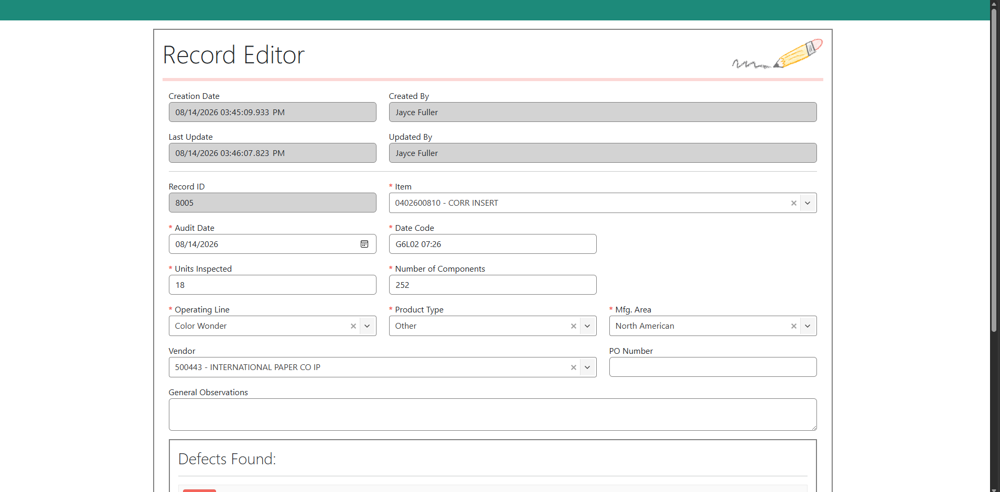
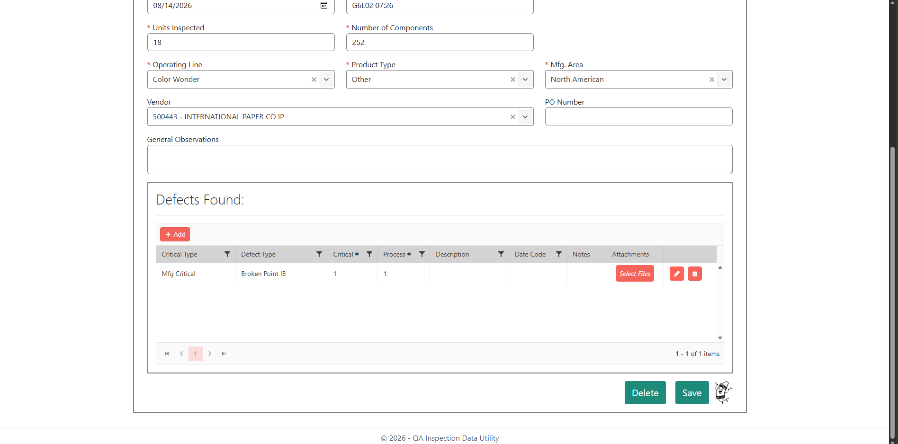
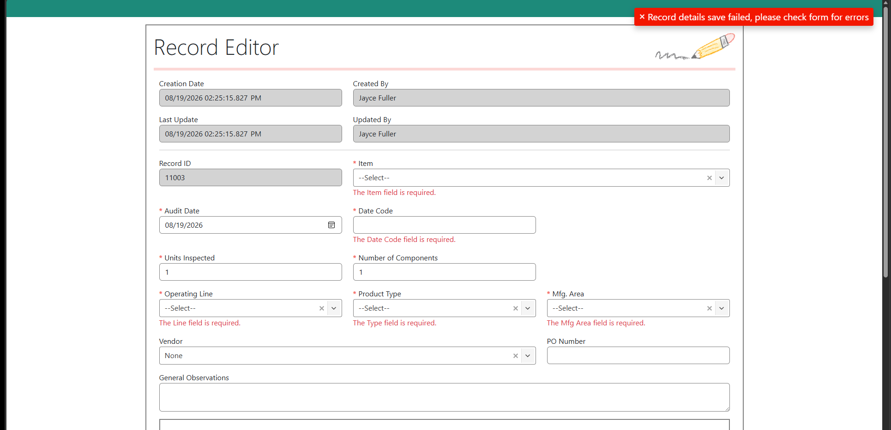
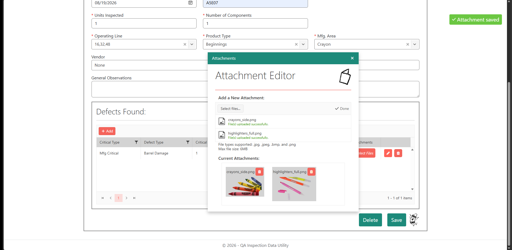
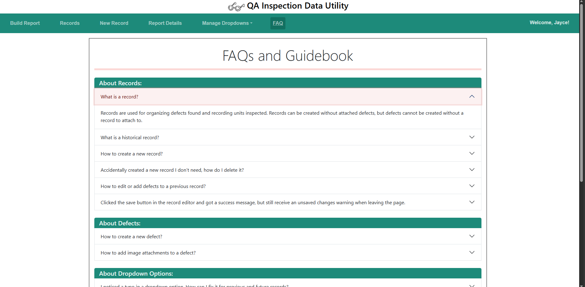
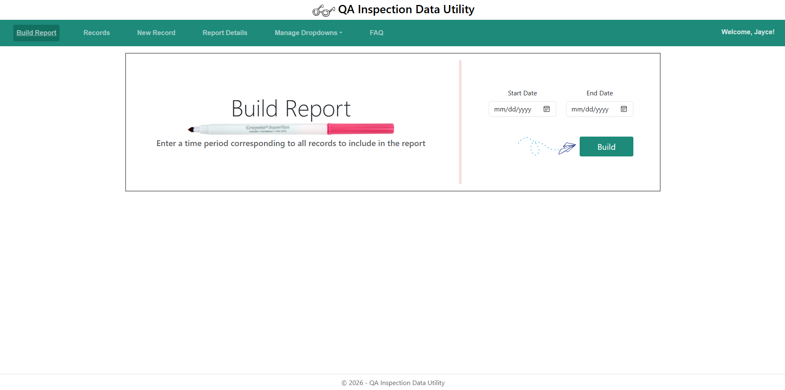
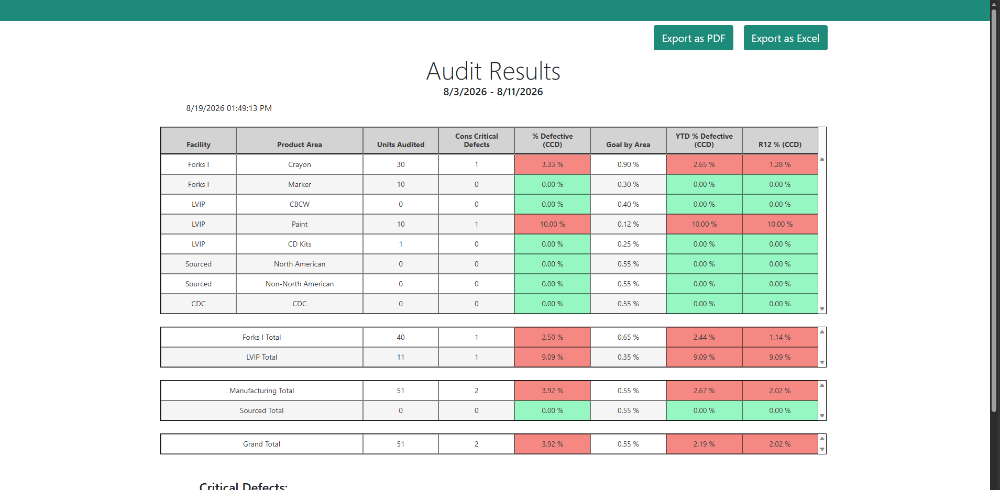
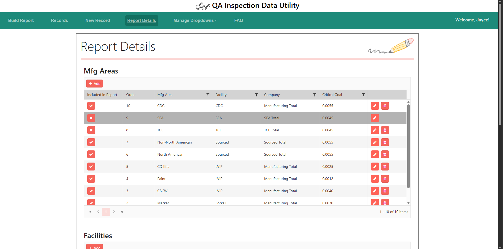
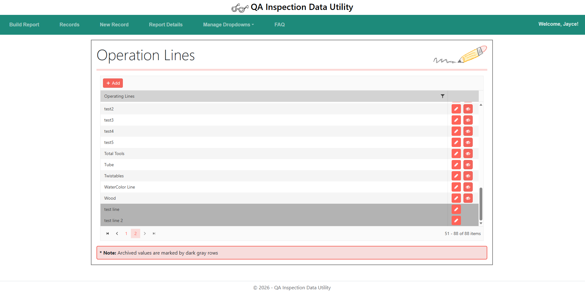

A web app developed to assist critical business operations for the quality assurance team at Crayola. Designed to improve workflow through efficient, intuitive record keeping of defects. Reports can be easily created by all Crayola QA employees with access to the site. All dropdown fields and report details can be easily managed by the designated website admin without needing to know any code.
* This is an internal company app. GitHub repository is not available to public view